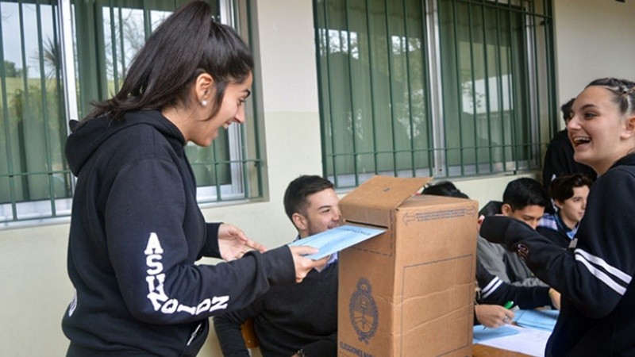

Noticias
Murió joven acribillado el mes pasado en brutal ataque que quedó
filmado
Menos de tres semanas después de haber sido acribillado, murió este
martes el joven de 23 años que recibió 18 disparos en la zona norte
de Rosario, un brutal ataque cuya filmación por parte de otro vecino
se había viralizado oportunamente.
Juan Cruz Ferrari fue atacado a tiros el pasado 23 de abril a la
madrugada en la esquina de República Dominicana y Reconquista y
permaneció este tiempo en el Hospital de Emergencias Clemente
Álvarez (Heca), desde donde confirmaron el deceso por la tarde.
La víctima no pudo sobrevivir a las múltiples heridas sufridas en
cuello, tórax, pelvis y ambos brazos, según se reportó cuando
ingresó al centro de salud, después de haberse arrastrado por sus
propios medios hasta la subcomisaría 24ª para pedir ayuda.
En los días siguientes al sangriento episodio se viralizó un video
filmado por un vecino desde la vereda de enfrente, donde se ve con
crudeza la manera en que Ferrari, luego de bajarse de su moto, fue
atacado de numerosos disparos a quemarropa por parte de otro sujeto
que iba a pie.
Santa Fe tendrá voto joven: el Tribunal Electoral ordenó incluir a
los chicos de 16 y 17 años en el padrón

La provincia es la única que aún no había habilitado esta
posibilidad. Sólo resta que el padrón provincial incorpore los
nombres de los 60 mil jóvenes de Santa Fe que ya figuraban en el
padrón nacional, para que puedan votar en los próximos comicios
Santa Fe tendrá voto joven: los chicos de 16 y 17 años podrán
participar de la elección de cargos provinciales y municipales. Así
lo aprobó el tribunal Electoral, a partir de una presentación de los
legisladores provinciales Rubén Giustiniani y Agustina Donnet.
Santa Fe era la única provincia del país donde quienes tienen entre
16 y 18 años no podían votar autoridades provinciales y municipales
para cargos ejecutivos y legislativos. En cambio, sí podían hacerlo,
en forma optativa, en elecciones para cargos nacionales como el
resto de la ciudadanía de esa franja etaria.
La resolución del Tribunal Electoral se conoció este martes a la
tarde y según Giustiniani y Donnet con esto alcanza para que los
chicos ya puedan votar en los comicios provinciales de este año: las
Paso serán en julio y las generales en septiembre.
Robo y destrozos en una parroquia donde funciona un grupo de scouts:
"Ya no hay nada para robar"
El hecho ocurrió durante la tarde en calle Buenos Aires al 4800.
Rompieron las aberturas y revolvieron todo. Denuncian que es la
quinta vez que ocurre
Este martes, un nuevo episodio de vandalismo y violencia ocurrió en
una parroquia, cuyas instalaciones también son utilizadas por un
grupo de scouts. Según denunciaron las familias que trabajan allí ad
honorem, delincuentes rompieron las aberturas y revolvieron todo el
lugar. De todos modos, advirtieron: "Ya no hay nada para robar, ya
entraron muchas veces, se llevaron todo".
El hecho ocurrió durante la tarde en calle Buenos Aires al 4800. En
ese lugar funciona la parroquia Nuestra Señora de las Nieves y, en
la parte de atrás, el grupo scout San Jorge.
Según denunciaron las familias que concurren cotidianamente,
expresaron que los delincuentes rompieron las puertas, retorcieron y
quitaron hierros y ahora temen que los delincuentes vuelvan: "Se
llevaron carpas, cortadora de césped y equipos de audio, ollas y
hasta rompieron la ropa que teníamos para donar".
Javkin: "En Rosario hay 37 delincuentes de alto perfil que salieron
o van a salir este año"

El intendente señaló que son 37 los reclusos catalogados como
peligrosos que este año tienen beneficios para salir de sus celdas.
Además, reclamó por la falta de oficiales preparados en la Agencia
de Investigación Criminal. "Hay más patrulleros en el deparamento
Garay que en Rosario", fustigó.
“En la ciudad hay 37 delincuentes de alto perfil que salieron o van
a salir este año. 16 tienen salidas transitorias vigentes y 9 tienen
libertades asistidas o condicionales”, reclamó el intendente en
conferencia de prensa.
A eso le sumó el pedido también por mayor presencia policial
capacitado para trabajar en Rosario y la región. “La Agencia de
Investigación Criminal (AIC) tiene en el departamento Santa Fe 43
policías cada 100 mil habitantes. En Rosario tenemos 36 cada 100
mil. Acá no tenemos coordinadores en la escena del hecho, por es.
muchas veces nos encontramos con carteles que puede levantar
cualquiera”, sostuvo.